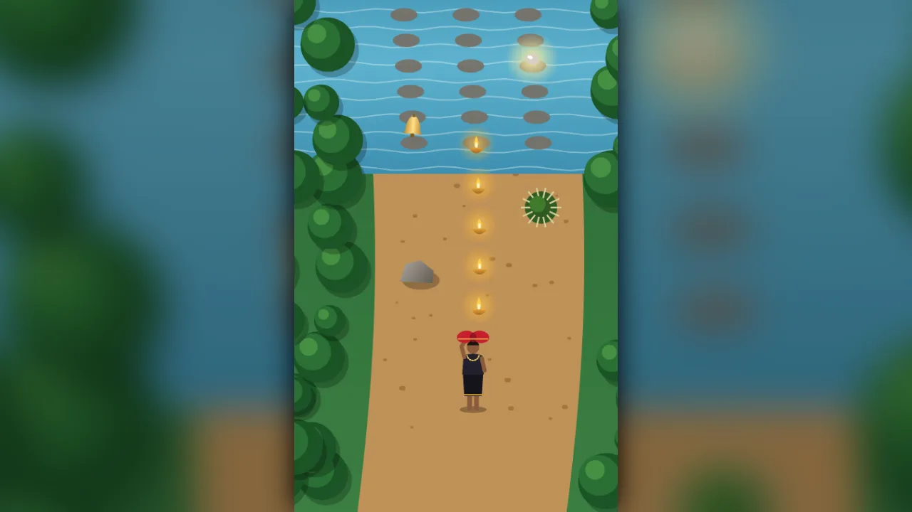
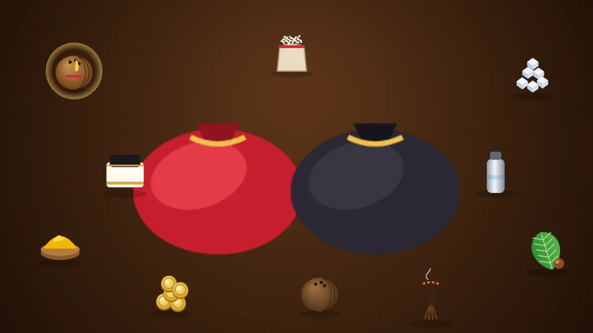
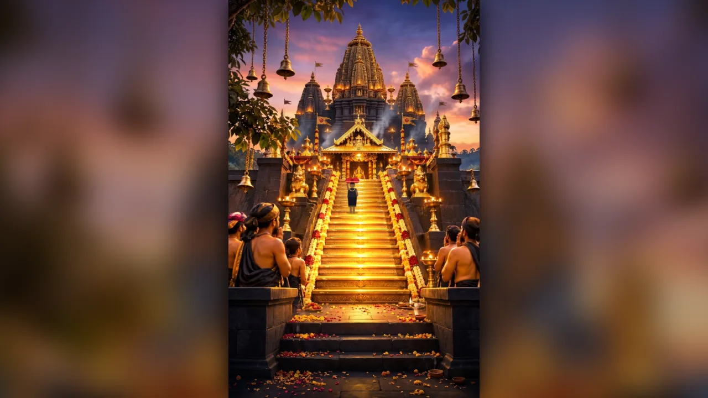

Sabarimala season · Devotional songs
Swami Ayyappa Song Collection
Songs for the devotee's journey, in Kannada and Tamil, with lyric videos. Listen, light a deepam, and climb the eighteen sacred steps. Swamiye Sharanam Ayyappa 🙏

The songs
More songs, in more languages, will join the collection through the season.
Ayyappa season games
Free, in English, ಕನ್ನಡ, தமிழ் and తెలుగు. Press play and our Ayyappa song plays in a small window while you play. Every game starts with a short how-to-play.

RunnerSabarimala YatraWalk the old forest path from Erumeli to the 18 holy steps.

SortingPack the IrumudiWhich pouch for the ghee coconut? Pack it right and tie the knot.

RhythmSharanam StepsAnswer "Sharanam!" in time with the drum and climb.

Every day · 41 daysMandala DeepamLight one lamp a day for the 41-day Mandala, 17 Nov to 27 Dec.
Pathinettam Padi Yatra: 18 steps, 18 songs, 18 games
- Tap a step on the picture (start at the bottom, step 1).
- Listen to its song and play its game. The song plays in a small window while you play.
- When you finish, that step lights up. Climb all 18 through the season: new songs and games join every week.
Light a deepam for Swami
Tap the lamp to light it
Take one quiet breath and say: Swamiye Sharanam Ayyappa.
Subscribe, like and share
New Ayyappa songs, in more languages, arrive through the Sabarimala season. Subscribe so you never miss one, like the videos you love, and share them with fellow devotees.